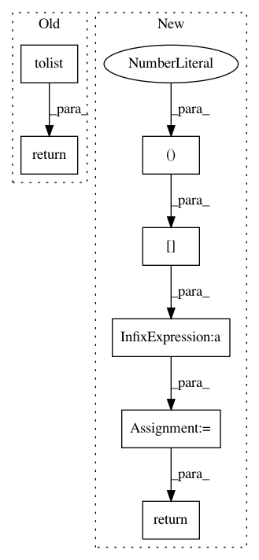

709a578c9e19da088225e8333e335a6a1f4c6e33,osmnx/distance.py,,nearest_edges,#Any#Any#Any#Any#Any#,151
Before Change
vertices_rad = np.deg2rad(vertices[["y", "x"]])
points_rad = np.deg2rad(np.array([Y, X]).T)
dist, pos = BallTree(vertices_rad, metric="haversine").query(points_rad, k=1)
ne = vertices.index[pos[:, 0]].tolist()
if return_dist:
return ne, dist
else:
return ne
def get_nearest_node(G, point, method="haversine", return_dist=False):
After Change
vertices_rad = np.deg2rad(vertices[["y", "x"]])
points_rad = np.deg2rad(np.array([Y, X]).T)
dist, pos = BallTree(vertices_rad, metric="haversine").query(points_rad, k=1)
dist = dist[:, 0] * EARTH_RADIUS_M // convert radians -> meters
ne = vertices.index[pos[:, 0]]
if return_dist:
return np.array(ne), np.array(dist)
else:
return np.array(ne)
In pattern: SUPERPATTERN
Frequency: 3
Non-data size: 7
Instances
Project Name: gboeing/osmnx
Commit Name: 709a578c9e19da088225e8333e335a6a1f4c6e33
Time: 2021-03-16
Author: boeing@usc.edu
File Name: osmnx/distance.py
Class Name:
Method Name: nearest_edges
Project Name: robertmartin8/PyPortfolioOpt
Commit Name: 70b08e1d2e703b4e3d16da9aaa04706dd4413232
Time: 2020-05-01
Author: thomas.schmlezer@gmail.com
File Name: pypfopt/hierarchical_portfolio.py
Class Name: HRPOpt
Method Name: _get_quasi_diag
Project Name: robertmartin8/PyPortfolioOpt
Commit Name: 5e56bcc41a7d147c710e57c4c764651c7e148581
Time: 2020-04-30
Author: thomas.schmlezer@gmail.com
File Name: pypfopt/hierarchical_portfolio.py
Class Name: HRPOpt
Method Name: _get_quasi_diag